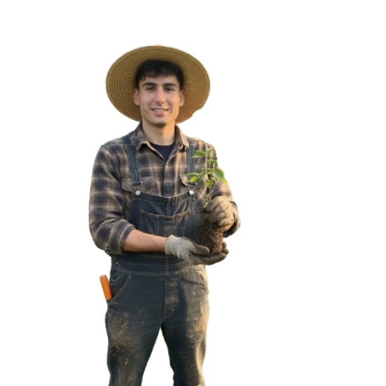
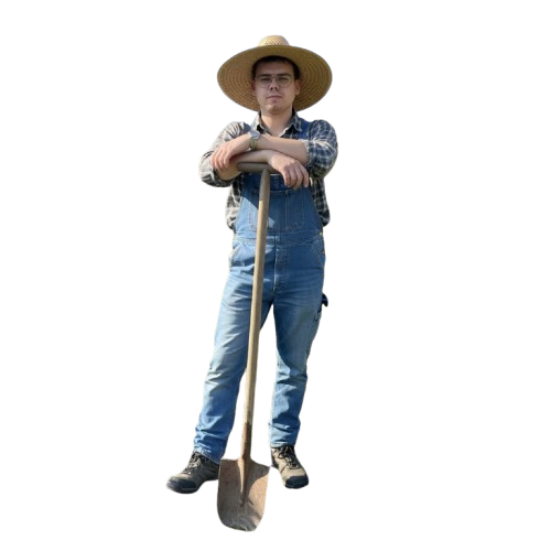

Minőség
Edzett, erős gyökérzet
Növényeinket szabadföldben és konténerben is a hazai időjárási viszonyokhoz eddzük, így ültetés után gyorsan megerednek.
Saját nevelésű díszfák, örökzöldek és gyümölcstermők közvetlenül a termelőtől. Válogass több száz egészséges, hazai klímához szoktatott növényünk közül.
Fedezd fel kínálatunkatNövényeinket szabadföldben és konténerben is a hazai időjárási viszonyokhoz eddzük, így ültetés után gyorsan megerednek.
Kertészmérnök kollégáink segítenek a talajadottságoknak és a fényviszonyoknak leginkább megfelelő fajták kiválasztásában.
Biológiai növényvédelmet és víztakarékos csepegtető öntözést alkalmazunk faiskolánk teljes területén.

Kattints a profilhoz ↻Okleveles kertészmérnök
15 év tapasztalat díszfák és gyümölcstermők nevelésében. A legkeményebb talaj sem akadály.

Kattints a profilhoz ↻Dísznövény szakértő
Örökzöldek és évelő kertek tervezésével foglalkozom. Minden elültetett magja életre kel.